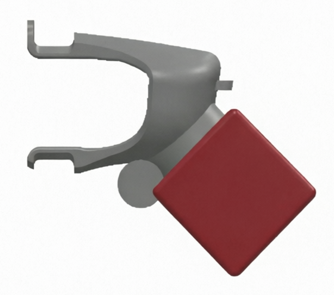
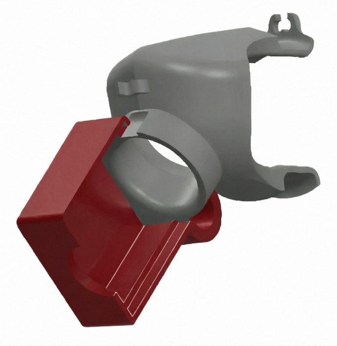
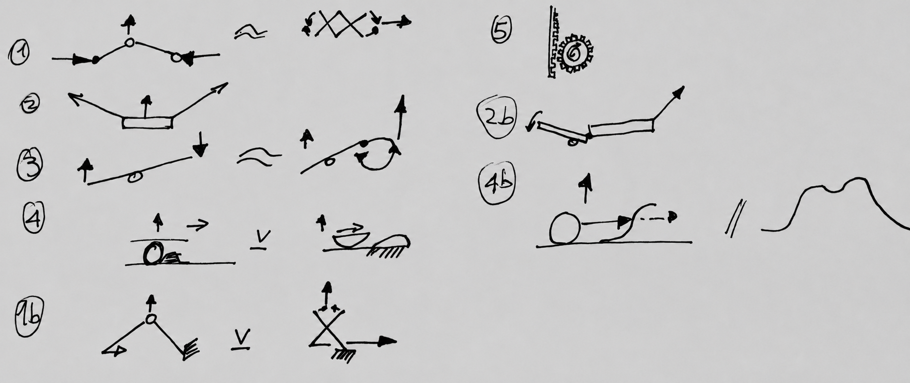
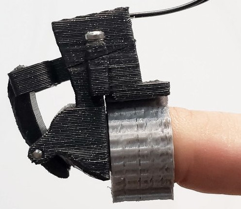
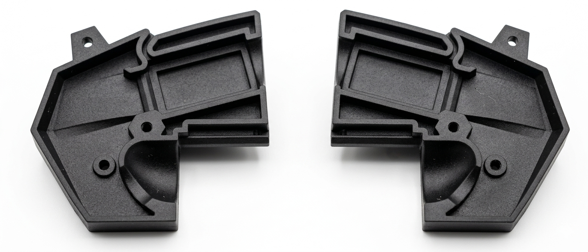

Description
Part of a broader haptic VR suit designed to enhance user immersion. The tactile subsystem used solenoids to tap the fingertips directly — but their size and placement blocked natural finger curl, breaking the experience.
My Role
Relocated the solenoids off the fingers and designed a transmission mechanism to propagate actuation impulses to the fingertips without obstructing movement. Also developed the connector system for integrating the module within the existing suit envelope.
Outcome
Delivered a relocatable solenoid mechanism that restored full finger curl while preserving fingertip haptic feedback. Validated through multiple CAD and physical iterations, with final verification by the client.
Attributions: Industrial design and form by Makers Department
The Problem
The existing haptic glove used solenoids mounted directly under the fingertips to deliver tactile feedback — but their size and placement prevented natural finger curl, breaking immersion during VR use. The core challenge was not the haptics themselves, but where they sat. Relocating the solenoids away from the fingers while maintaining force transmission to the fingertip became the central design problem.

Original design — side view showing solenoid housing position relative to the finger

Original design — 3/4 view showing the actuator porthole and bulk at the knuckle joint
Early Prototype & Iteration
Relocating the solenoids created a new constraint: force still needed to reach the fingertip from a distance. Rather than fully developing each concept before moving forward, this phase prioritised low-resolution solutions — enough to implant a question, request feedback, and shape the problem space. Overpolished concepts invite static thinking; rough ones invite iteration.
Ideation & Linkage Mapping

Five linkage families mapped to evaluate force transmission from a relocated solenoid position
The initial sketches weren't drawn against the full application brief — they addressed a single question: how do you move a point up and down? The goal was to enter the problem space quickly, not accurately. From that exploration, five linkage families emerged: two-segment push, two-segment pull, common pivot, ball-over-bump, and rack-and-pinion. The final mechanism is closest to solution 2b — two segments, two pivots — though the final geometry evolved beyond any single sketch. One pivot became a slot to reduce overall height, a refinement the ideation phase couldn't anticipate but the sketches made possible.
The gap between sketch and solution was closed through CAD. Working backwards from known constraints — the solenoid's output movement was fixed, and the fingertip contact needed to behave as a flap — the problem reduced to a single pivot and a pull force. A physical test with a 3D printed flap and a fishing line confirmed the pivot geometry before any mechanism was designed. Pulling the flap by hand was enough: no solenoid, no linkage, just a seed to work backwards from.
The cable test reframed the problem rather than solved it. A cable-only solution relied on the finger's natural spring-back to return the flap to neutral — insufficient and difficult to control reliably. The insight was that the cable, as a flexible connector, could only pull — replacing it with a rigid link introduced the ability to push, resolving the return problem. The mechanism reduced to its essentials: a solenoid, a connector extending the actuation point to a first pivot, and a lever. Fixed pivot positions introduced a height constraint, which was resolved by tilting the solenoid and converting the first pivot into a slot to accommodate the geometry.
Rapid Prototyping
With the problem space shaped by sketches and CAD, the first physical prototype tested the core hypothesis — could a flap mechanism deliver consistent actuation from a relocated position? The build was intentionally minimal: enough to answer the question, nothing more. Not all iterations are documented here — only those that marked a meaningful shift in direction.
 ▶
▶
Cable pull test — validating pivot geometry and flap behaviour before committing to a physical build
The cable test informed the geometry; this build tested it on the body. Mounting position, knuckle clearance, and actuation range were all evaluated for the first time under real conditions.

Linkage geometry and mounting position validated against knuckle articulation and actuation range
Each prototype sharpened the problem. A solution that satisfied the kinematics might still be rejected for height, assembly, or form — every constraint surfaced through iteration rather than specification. The problem space didn't shrink by planning; it shrunk by building.
Redesigned Mechanism
The module had to meet three constraints simultaneously: fit within the existing glove envelope without adding bulk at the knuckle, transmit the solenoid signal to the fingertip with minimal distortion — achieved by keeping the linkage as stiff and direct as possible, minimising the number of intermediate parts — and receive DC power routed through a chain of boards spanning from backpack to forearm to hand to finger without restricting glove flex. To support the broader system integration, I produced a research report covering cable routing solutions and board-to-board connectivity, recommending pogo pin connectors for their reliability under repeated movement. Signal fidelity was verified by the client.
 ▶
▶
Relocated solenoid and propagation mechanism — full range of motion preserved
Physical Validation
The housing was produced in two halves via external sintering — split to allow sequential assembly of the internal components. The lever fulcrum requires a small stainless shaft inserted during assembly, and a dedicated channel above the solenoid cavity routes the power cable without additional fixings. The entire assembly is secured with just two bolts — no adhesives required. The geometry was designed to consolidate solenoid mounting, linkage routing, and connector placement within the smallest possible footprint.

Sintered housing halves — final build
The clearest breakthroughs came from reframing the brief — separating what the mechanism needed to do from how it might do it. Once the problem was restated as 'a flap that moves' rather than 'a linkage that transmits force', the solution space collapsed and the path forward became obvious. The sketches, the fishing line, the cable — none were wasted steps. Each one sharpened the question until the answer was inevitable.
Let's build smart things together.
Looking to work on systems that move, sense, and respond.